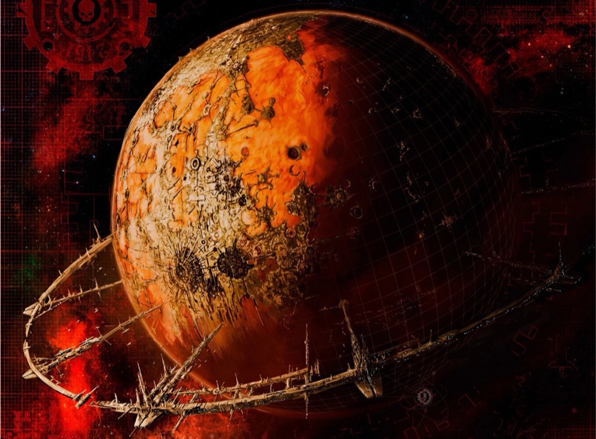

Segmentum Fortress
| Segmentum Fortress | |
|---|---|
| Headquarters of a Segmentum | |
 | |
| Type | Orbital void station, shipyard and starport |
| Number | Five, one for each segmentum |
| Operated by | The Imperial Navy, under the Master of the Segmentum for civil administration |
| Established | Early M31, under the Heresy reforms (estimated) |
| The five fortresses | |
| Segmentum Solar | Mars |
| Segmentum Obscurus | Cypra Mundi |
| Segmentum Pacificus | Hydraphur |
| Segmentum Tempestus | Bakka |
| Ultima Segmentum | Kar Duniash |
A Segmentum Fortress is a massive orbital fleet base that serves as the headquarters of the Imperial Navy in one of the five segmenta of the Imperium of Mankind. Each fortress is a void station and starport with many docks, orbital shipyards and voidship repair facilities. It is the seat of the segmentum's battlefleet and the centre of its naval administration.[1]
Most ships of a segmentum battlefleet never see their fortress. The fleet is divided among its sector battlefleets, which are based in their own sectors, and only a small part of it is kept at the segmentum base. The fortress is therefore better understood as the administrative heart of the segmentum than as its main fighting force.[2]
Chain of rule
[edit]The fortress sits at the segmentum level of the chain of rule. The table below shows where it stands.
| Level | Office or division | Example |
|---|---|---|
| Terra | High Lords of Terra; the Lord High Admiral | Terra |
| Segmentum | Segmentum Fortress, under the Master of the Segmentum and the segmentum's Lord High Admiral | Mars, for Segmentum Solar |
| Sector | Sector Governor; sector battlefleet | Calixis Sector |
| Sub-sector | Sub-sector governor | Veritus Sub-sector |
| Planet | Planetary Governor | A single inhabited world |
The fortresses
[edit]Mars
[edit]The Ring of Iron of Mars serves as the fortress of the Segmentum Solar. It stands in the Sol System, so it is the only fortress that lies at the heart of the Imperium and not at its edge. Mars is also a forge world of the Adeptus Mechanicus, so the fortress is run in close partnership with the Mechanicus.[1]
Cypra Mundi
[edit]Cypra Mundi is the fortress of the Segmentum Obscurus, the northern segmentum. It is a forge world, and its battlefleet is known as Battlefleet Obscurus.[2]
Hydraphur
[edit]Hydraphur is the fortress of the Segmentum Pacificus, the western segmentum. It is also a forge world. Its battlefleet is known as Battlefleet Pacificus.[2]
Bakka
[edit]Bakka is a mining world and the fortress of the Segmentum Tempestus, the southern segmentum. Its battlefleet is known as Battlefleet Bakka. Its planetary estates have long been held by hereditary families.[2]
Kar Duniash
[edit]Kar Duniash is the fortress of the Ultima Segmentum, the eastern segmentum. It is a naval world, with a naval academy, and it is the seat of Battlefleet Ultima.[2]
Command
[edit]A Segmentum Fortress has two heads. The civil administration is led by a Master of the Segmentum, an official of the Administratum. The naval forces are led by the segmentum's Lord High Admiral, a flag officer of the Imperial Navy who may hold a seat among the High Lords of Terra. Records differ on which of the two outranks the other, and the Administratum and the Navy have each claimed precedence.[3][a]
Timeline
[edit]- c. 015–021.M31: the five segmenta and their fortresses fixed in the reforms after the Heresy (estimated)
- Early M30s: the forge worlds of Cypra Mundi and Hydraphur brought into compliance during the Great Crusade (estimated)
- 745.M41: the fleet from Bakka relieves Macragge in the Battle of Macragge
- 999.M41: the Great Rift cuts several fortresses off from their sectors
See also
[edit]Notes
[edit]- ^ Imperial accounts differ. Administratum records give the Master precedence in the fortress, while Navy records give precedence to the Lord High Admiral in matters of fleet deployment.